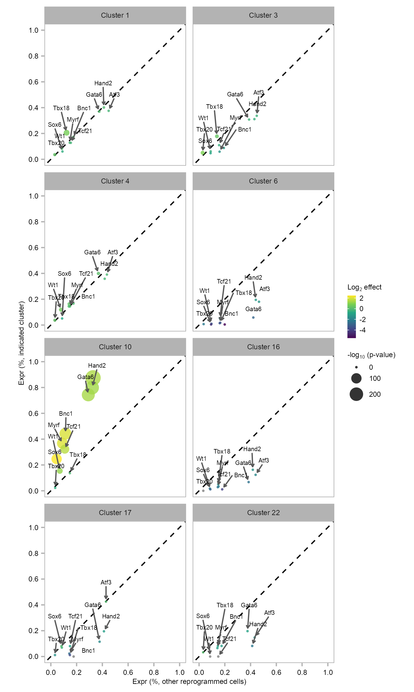

Rational Epicardial Reprogramming with 10 Transcription Factors by Reprogram-Seq
Jialei Duan ![]()
Abstract
Reprogram-Seq leverages organ-specific cell atlas data with single-cell perturbation and computational analysis to predict, evaluate, and optimize TF combinations that reprogram a cell type of interest.
Sys.time()[1] "2022-09-24 13:48:06 CDT"[1] "America/Chicago"Preparation
Functions
Load required packages.
`%+replace%` <- ggplot2::`%+replace%`Symbols
PROJECT_DIR <- file.path(
"/Users/jialei/Dropbox/Data/Projects/UTSW/Cellular_reprogramming",
"Cardiac_reprogramming/Notebooks"
)gene_symbols <- vroom::vroom(
file = file.path(
PROJECT_DIR, "data", "misc", "genes.tsv"
),
col_names = FALSE
)
gene_symbols <- setNames(object = gene_symbols$X2, nm = gene_symbols$X1)
gene_symbols |> head()ENSMUSG00000051951 ENSMUSG00000089699 ENSMUSG00000102343 ENSMUSG00000025900
"Xkr4" "Gm1992" "Gm37381" "Rp1"
ENSMUSG00000109048 ENSMUSG00000025902
"Rp1" "Sox17" length(gene_symbols)[1] 27999Matrix
matrix_readcount_use <- Matrix::sparseMatrix(
i = readRDS(
file.path(
PROJECT_DIR, "data/10x", "expr_readcount_raw_csc_indices.rds"
)
),
p = readRDS(
file.path(
PROJECT_DIR, "data/10x", "expr_readcount_raw_csc_indptr.rds"
)
),
x = readRDS(
file.path(
PROJECT_DIR, "data/10x", "expr_readcount_raw_csc_values.rds"
)
),
dims = readRDS(
file.path(
PROJECT_DIR, "data/10x", "expr_readcount_raw_csc_shape.rds"
)
),
dimnames = readRDS(
file.path(
PROJECT_DIR, "data/10x", "expr_readcount_raw_csc_dimnames.rds"
)
),
index1 = FALSE
)dim(matrix_readcount_use)[1] 27999 34564rownames(matrix_readcount_use) <- paste(
rownames(matrix_readcount_use),
gene_symbols[rownames(matrix_readcount_use)],
sep = "_"
)
matrix_readcount_use[1:5, 1:5] |>
as.matrix() |>
knitr::kable()| BL5_AAACCTGCACTACAGT | BL5_AAACCTGCAGTACACT | BL5_AAACCTGGTTCACGGC | BL5_AAACCTGGTTGCTCCT | BL5_AAACCTGTCCAACCAA | |
|---|---|---|---|---|---|
| ENSMUSG00000051951_Xkr4 | 0 | 0 | 0 | 0 | 0 |
| ENSMUSG00000089699_Gm1992 | 0 | 0 | 0 | 0 | 0 |
| ENSMUSG00000102343_Gm37381 | 0 | 0 | 0 | 0 | 0 |
| ENSMUSG00000025900_Rp1 | 0 | 0 | 0 | 0 | 0 |
| ENSMUSG00000109048_Rp1 | 0 | 0 | 0 | 0 | 0 |
Embedding
dim(embedding)[1] 22140 6Check memory usage.
purrr::walk(
list(matrix_readcount_use, embedding), \(x) {
print(object.size(x), units = "auto", standard = "SI")
}
)1.1 GB
2.8 MBClustering
x_column <- "x"
y_column <- "y"
GEOM_POINT_SIZE <- 0.5
EMBEDDING_TITLE_PREFIX <- "t-SNE"
RASTERISED <- FALSEEmbedding
embedding |>
tibble::rownames_to_column(var = "cell") |>
dplyr::mutate(
num_umis = colSums(matrix_readcount_use[, cell]),
num_features = colSums(matrix_readcount_use[, cell] > 0),
) |>
dplyr::rename(batch = batch.id) |>
dplyr::group_by(batch) |>
dplyr::summarise(
num_cells = n(),
median_umis = median(num_umis),
median_features = median(num_features)
) |>
dplyr::mutate(
group = dplyr::case_when(
batch %in% c("BL5", "BL6") ~ "Primary",
batch %in% c("BL7") ~ "Control",
TRUE ~ "Reprogrammed"
),
group = factor(
group,
levels = c("Primary", "Control", "Reprogrammed")
)
) |>
dplyr::arrange(group) |>
dplyr::select(
group, dplyr::everything()
) |>
gt::gt() |>
gt::data_color(
columns = c(group),
colors = scales::col_factor(
palette = paletteer::paletteer_d(
n = 3, palette = "colorblindr::OkabeIto"
) |> as.character(),
domain = NULL
)
) |>
gt::data_color(
columns = c(median_umis),
colors = scales::col_numeric(
palette = c(
"green", "orange", "red"
),
domain = NULL
)
) |>
gt::summary_rows(
columns = c(batch),
fns = list(
Count = ~ n()
),
decimals = 0
) |>
gt::summary_rows(
columns = c(num_cells),
fns = list(
Sum = ~ sum(.)
),
decimals = 0
) |>
gt::summary_rows(
columns = c(median_umis:median_features),
fns = list(
Mean = ~ mean(.)
),
decimals = 2
) |>
gt::tab_header(
title = gt::md("**10x Genomics**; Batch")
)| 10x Genomics; Batch | |||||
| group | batch | num_cells | median_umis | median_features | |
|---|---|---|---|---|---|
| Primary | BL5 | 5888 | 4831 | 1673.5 | |
| Primary | BL6 | 6047 | 4521 | 1570.0 | |
| Control | BL7 | 4914 | 13713 | 3571.0 | |
| Reprogrammed | BL8 | 5291 | 10534 | 3043.0 | |
| Count | — | 4 | — | — | — |
| Sum | — | — | 22,140 | — | — |
| Mean | — | — | — | 8,399.75 | 2,464.38 |
Cluster
p_embedding_cluster <- plot_embedding(
data = embedding[, c(x_column, y_column)],
color = embedding$cluster |> as.factor(),
label = glue::glue("{EMBEDDING_TITLE_PREFIX}; Cluster"),
color_labels = TRUE,
color_legend = FALSE,
sort_values = FALSE,
rasterise = RASTERISED,
geom_point_size = GEOM_POINT_SIZE
) +
theme_customized_embedding()
p_embedding_UMI <- plot_embedding(
data = embedding[, c(x_column, y_column)],
color = log10(Matrix::colSums(matrix_readcount_use[, embedding$cell])),
label = glue::glue("{EMBEDDING_TITLE_PREFIX}; UMI"),
color_legend = TRUE,
sort_values = FALSE,
shuffle_values = TRUE,
rasterise = RASTERISED,
geom_point_size = GEOM_POINT_SIZE
) +
theme_customized_embedding()
p_embedding_MT <- plot_embedding(
data = embedding[, c(x_column, y_column)],
color = (colSums(matrix_readcount_use[
stringr::str_detect(
string = stringr::str_remove(
string = rownames(matrix_readcount_use),
pattern = "^E.+_"
),
pattern = "mt-"
),
]) / colSums(matrix_readcount_use))[embedding$cell],
label = glue::glue("{EMBEDDING_TITLE_PREFIX}; MT %"),
color_legend = TRUE,
sort_values = TRUE,
shuffle_values = FALSE,
rasterise = RASTERISED,
geom_point_size = GEOM_POINT_SIZE
) + theme_customized_embedding()
p_embedding_group <- plot_embedding(
data = embedding[, c(x_column, y_column)],
color = embedding$group |> as.factor(),
label = glue::glue("{EMBEDDING_TITLE_PREFIX}; Group"),
color_labels = FALSE,
color_legend = TRUE,
sort_values = FALSE,
shuffle_values = TRUE,
rasterise = RASTERISED,
geom_point_size = GEOM_POINT_SIZE
) +
theme_customized_embedding() +
ggplot2::scale_color_manual(
values = c(
Primary = "#00AFBB",
Reprogrammed = "#8BC34A",
Control = "#E7B800"
)
)embedding |>
dplyr::mutate(
num_umis = colSums(matrix_readcount_use[, cell]),
num_features = colSums(matrix_readcount_use[, cell] > 0),
) |>
dplyr::group_by(cluster) |>
dplyr::summarise(
num_cells = n(),
median_umis = median(num_umis),
median_features = median(num_features)
) |>
gt::gt() |>
gt::data_color(
columns = c(median_umis),
colors = scales::col_numeric(
palette = c(
"green", "orange", "red"
),
domain = NULL
)
) |>
gt::summary_rows(
columns = c(cluster),
fns = list(
Count = ~ n()
),
decimals = 0
) |>
gt::summary_rows(
columns = c(num_cells),
fns = list(
Sum = ~ sum(.)
),
decimals = 0
) |>
gt::tab_header(
title = gt::md("**10x Genomics**; Clustering")
)| 10x Genomics; Clustering | ||||
| cluster | num_cells | median_umis | median_features | |
|---|---|---|---|---|
| 1 | 3240 | 15464.0 | 3820.0 | |
| 2 | 2259 | 2390.0 | 997.0 | |
| 3 | 1914 | 12506.5 | 3352.5 | |
| 4 | 1707 | 14631.0 | 3845.0 | |
| 5 | 1330 | 5696.5 | 1564.5 | |
| 6 | 1329 | 5189.0 | 1451.0 | |
| 7 | 1222 | 6010.0 | 2147.0 | |
| 8 | 1213 | 7804.0 | 2151.0 | |
| 9 | 1093 | 5399.0 | 2239.0 | |
| 10 | 1082 | 11149.5 | 3049.0 | |
| 11 | 850 | 7452.5 | 2738.0 | |
| 12 | 848 | 2341.0 | 773.0 | |
| 13 | 638 | 3925.5 | 985.0 | |
| 14 | 578 | 4939.5 | 2170.5 | |
| 15 | 508 | 5815.0 | 1808.0 | |
| 16 | 404 | 5027.5 | 1714.0 | |
| 17 | 393 | 5241.0 | 2151.0 | |
| 18 | 380 | 7976.5 | 2464.5 | |
| 19 | 299 | 6724.0 | 2777.0 | |
| 20 | 280 | 5360.5 | 1906.5 | |
| 21 | 148 | 2981.5 | 1140.5 | |
| 22 | 117 | 5305.0 | 1954.0 | |
| 23 | 95 | 2586.0 | 1370.0 | |
| 24 | 92 | 4966.5 | 280.0 | |
| 25 | 64 | 6244.5 | 2619.5 | |
| 26 | 57 | 4898.0 | 251.0 | |
| Count | 26 | — | — | — |
| Sum | — | 22,140 | — | — |
purrr::reduce(
list(
p_embedding_cluster,
p_embedding_UMI,
p_embedding_MT,
p_embedding_group
),
`+`
) +
patchwork::plot_layout(ncol = 2) +
patchwork::plot_annotation(
theme = ggplot2::theme(plot.margin = ggplot2::margin())
)
Attaching package: 'formattable'The following object is masked from 'package:patchwork':
areaembedding |>
dplyr::mutate(
num_umis = colSums(matrix_readcount_use[, cell]),
num_features = colSums(matrix_readcount_use[, cell] > 0),
) |>
dplyr::group_by(group) |>
dplyr::summarise(
num_cells = n(),
median_umis = median(num_umis),
median_features = median(num_features)
) |>
formattable::formattable(
list(
# num_cells = formattable::color_tile("transparent", "lightpink"),
num_cells = formattable::color_bar("Lightpink"),
median_umis = formattable::color_bar("lightgreen"),
median_features = formattable::color_bar("lightblue")
),
full_width = FALSE,
caption = "10x Genomics; Group"
)| group | num_cells | median_umis | median_features |
|---|---|---|---|
| Primary | 11935 | 4672 | 1620 |
| Reprogrammed | 5291 | 10534 | 3043 |
| Control | 4914 | 13713 | 3571 |
purrr::map(levels(embedding$group), \(x) {
plot_embedding(
data = embedding[, c(x_column, y_column)],
color = as.integer(embedding$group == x) |> as.factor(),
label = glue::glue(
"{EMBEDDING_TITLE_PREFIX}; {x}: {sum(embedding$group == x)}"
),
color_labels = FALSE,
color_legend = FALSE,
sort_values = FALSE,
shuffle_values = TRUE,
rasterise = RASTERISED,
geom_point_size = GEOM_POINT_SIZE
) +
theme_customized_embedding() +
ggplot2::scale_color_manual(
values = c("grey70", "salmon")
)
}) |>
purrr::reduce(`+`) +
patchwork::plot_layout(ncol = 3) +
patchwork::plot_annotation(
theme = ggplot2::theme(plot.margin = ggplot2::margin())
)Extract colors from the initial plots to keep colors consistent.
Polished
p_embedding_cluster <- plot_embedding(
data = embedding[, c(x_column, y_column)],
color = embedding$cluster |> as.factor(),
label = NULL,
color_labels = TRUE,
color_legend = FALSE,
sort_values = FALSE,
rasterise = RASTERISED,
geom_point_size = GEOM_POINT_SIZE
) +
theme_customized_embedding(void = TRUE)
p_embedding_clustercluster_labels <- embedding |>
dplyr::group_by(cluster) |>
dplyr::summarise(
x = median(x),
y = median(y)
) |>
as.data.frame()
cluster_labels[25, c(2, 3)] <- c(-32.5, -8.5)
polygon_coordinates_cluster10 <- data.frame(
x = c(
-23, -26, -26, -24, -25.5, -27, -25, -24, -23, -20.5,
-18.5, -18, -19.5, -18.5, -19, -18, -18, -17.5, -17, -15.5,
-17, -16, -15, -14, -12, -11.5, -12, -10.5, -10.5, -9.5,
-9, -7, -7, -6, -5, -5.5, -5.5, -5.5, -5, -5,
-3.5, -6, -9, -9.5, -11.5, -13, -19
),
y = c(
-25, -21, -18, -15, -14.5, -11, -4, -1, 3, 0,
3, 2.5, -7, -9, -12, -11, -12.5, -12, -11, -10.5,
-9, -8, -8, -10, -9.5, -10.5, -14, -14.5, -13, -12.5,
-11.5, -11, -12, -12, -12, -15, -18, -18, -18, -19,
-20, -22, -21, -23, -25, -25.5, -25.5
)
)
layers <- list(
ggplot2::annotate(
geom = "text",
x = cluster_labels[, "x"],
y = cluster_labels[, "y"], label = cluster_labels[, 1],
parse = TRUE,
size = 2,
color = c("black")
),
ggplot2::geom_polygon(
data = polygon_coordinates_cluster10,
ggplot2::aes(x, y), fill = NA, color = "black", linewidth = .3
),
ggplot2::annotate(
geom = "path",
x = -32.5 + 2.5 * cos(seq(0, 2 * pi, length.out = 100)),
y = -17 + 32.5 / 16.5 * 2.5 * sin(seq(0, 2 * pi, length.out = 100)),
color = "#00BFC4",
linewidth = .3
)
)
p_embedding_reprogrammed <- plot_embedding(
data = embedding[, c(x_column, y_column)],
color = as.integer(embedding$group == "Reprogrammed") |> as.factor(),
label = NULL,
color_labels = TRUE,
color_legend = FALSE,
sort_values = TRUE,
rasterise = RASTERISED,
geom_point_size = GEOM_POINT_SIZE
) +
theme_customized_embedding(void = TRUE) +
ggplot2::scale_color_manual(
values = c("grey70", "salmon")
) +
layers +
ggplot2::annotate(
geom = "text",
x = -82.06687,
y = 76.43042,
label = "10F\nreprogrammed\nMEFs",
family = "Arial",
color = "#FF5722",
size = 2.5,
vjust = "inward", hjust = "inward"
) +
ggplot2::annotate(
geom = "text",
family = "Arial",
x = -72,
y = -67,
label = "Primary\nepicardial cells",
color = "#00BFC4",
size = 2,
vjust = "inward", hjust = "inward"
) +
ggplot2::annotate(
geom = "segment",
x = -42,
xend = -35,
y = -55,
yend = -24,
color = "#00BFC4", size = .2,
arrow = ggplot2::arrow(
length = ggplot2::unit(1, "mm"), ends = "last",
type = "closed"
)
)Warning: Using `size` aesthetic for lines was deprecated in ggplot2 3.4.0. Please use
`linewidth` instead.
ℹ The deprecated feature was likely used in the ggplot2 package.
Please report the issue at <https://github.com/tidyverse/ggplot2/issues>.p_embedding_uninfected <- plot_embedding(
data = embedding[, c(x_column, y_column)],
color = as.integer(embedding$group == "Control") |> as.factor(),
label = NULL,
color_labels = TRUE,
color_legend = FALSE,
sort_values = TRUE,
rasterise = RASTERISED,
geom_point_size = GEOM_POINT_SIZE
) +
theme_customized() +
theme_customized_void() +
ggplot2::scale_color_manual(
values = c("grey70", "salmon")
) +
layers +
ggplot2::annotate(
geom = "text",
x = -82.06687,
y = 76.43042,
label = "Uninfected\nMEFs",
family = "Arial",
color = "#FF5722",
size = 2.5,
vjust = "inward", hjust = "inward"
)Warning: The `size` argument of `element_line()` is deprecated as of ggplot2 3.4.0.
Please use the `linewidth` argument instead.list(
p_embedding_reprogrammed,
p_embedding_uninfected
) |>
purrr::reduce(`+`) +
patchwork::plot_layout(ncol = 2) +
patchwork::plot_annotation(
theme = ggplot2::theme(plot.margin = ggplot2::margin())
)Composition
calc_group_composition(
data = embedding,
x = "cluster",
group = "group"
) |>
dplyr::mutate(
cluster = factor(
cluster
)
) |>
plot_barplot(
x = "cluster",
y = "percentage",
z = "group",
legend_ncol = 1,
) +
ggplot2::scale_fill_manual(
values = c(
Primary = "#00AFBB",
Reprogrammed = "#8BC34A",
Control = "#E7B800"
)
)clusters_selected <- c(1, 3, 4, 6, 10, 16, 17, 22)
purrr::map(clusters_selected, \(x) {
cells_1 <- embedding$cell[
(embedding$cluster == x) & (embedding$category == "BL8")
]
cells_2 <- embedding$cell[
(embedding$cluster == x) & (embedding$category == "BL7")
]
data.frame(
cluster = x,
ratio = length(cells_1) / length(cells_2)
)
}) |>
dplyr::bind_rows() |>
dplyr::mutate(
cluster = factor(
cluster,
levels = clusters_selected |> rev()
)
) |>
ggplot(
aes(
y = cluster,
x = ratio,
fill = cluster
)
) +
ggplot2::geom_bar(stat = "identity") +
theme_customized_violin() +
ggplot2::guides(fill = "none") +
ggplot2::scale_y_discrete(
name = "MEF-derived cluster"
) +
ggplot2::scale_x_continuous(
name = "Ratio\n(reprogrammed / uninfected MEF)",
breaks = seq(1, 9, 2)
) +
ggplot2::scale_fill_manual(
values = c(
rep("grey35", 3),
"#FF5722",
rep("grey35", 4)
)
) +
ggplot2::geom_vline(xintercept = 1, linetype = 2, size = .2)Expression
Embedding
FEATURES_SELECTED <- c(
"ENSMUSG00000009471_Myod1",
"ENSMUSG00000026414_Tnnt2",
"ENSMUSG00000016458_Wt1",
"ENSMUSG00000025105_Bnc1",
"ENSMUSG00000049382_Krt8",
"ENSMUSG00000079018_Ly6c1",
"ENSMUSG00000049436_Upk1b",
"ENSMUSG00000021391_Cenpp"
)purrr::map(FEATURES_SELECTED, \(x) {
selected_feature <- x
cat(selected_feature, "\n")
values <- log10(
calc_cpm(matrix_readcount_use[, embedding$cell])
[selected_feature, ] + 1
)
p1 <- plot_embedding(
data = embedding[, c(x_column, y_column)],
color = values,
label = paste(
EMBEDDING_TITLE_PREFIX,
selected_feature |> stringr::str_remove(pattern = "^E.+_"),
sep = "; "
),
color_legend = TRUE,
sort_values = TRUE,
rasterise = RASTERISED,
geom_point_size = GEOM_POINT_SIZE * 1.25,
na_value = "grey80"
) +
theme_customized_embedding()
return(p1)
}) |>
# unlist(recursive = FALSE) |>
purrr::reduce(`+`) +
patchwork::plot_layout(ncol = 2, byrow = FALSE) +
patchwork::plot_annotation(
theme = ggplot2::theme(plot.margin = ggplot2::margin())
)ENSMUSG00000009471_Myod1
ENSMUSG00000026414_Tnnt2
ENSMUSG00000016458_Wt1
ENSMUSG00000025105_Bnc1
ENSMUSG00000049382_Krt8
ENSMUSG00000079018_Ly6c1
ENSMUSG00000049436_Upk1b
ENSMUSG00000021391_Cenpp Bar plot
cells_barplot <- list(
embedding |>
dplyr::filter(
cluster == 25 & category %in% c("BL5", "BL6")
) |>
dplyr::pull(cell),
embedding |>
dplyr::filter(
cluster == 10 & category %in% c("BL8")
) |>
dplyr::pull(cell),
embedding |>
dplyr::filter(
cluster != 10 & category %in% c("BL8")
) |>
dplyr::pull(cell),
embedding |>
dplyr::filter(
category %in% ("BL7")
) |>
dplyr::pull(cell)
)
names(cells_barplot) <- c(
"Primary epi.", "Cluster10",
"Other", "Uninfected MEF"
)
features_barplot <- c(
"ENSMUSG00000021950_Anxa8",
"ENSMUSG00000015627_Gata5",
"ENSMUSG00000031517_Gpm6a",
"ENSMUSG00000020911_Krt19",
"ENSMUSG00000049436_Upk1b"
)
barplot_helper(cells_barplot, features_barplot, matrix_readcount_use) |>
dplyr::mutate(
feature = stringr::str_remove(string = feature, pattern = "^.+_")
) |>
dplyr::mutate(
value = log10(value + 1),
group = factor(group, levels = names(cells_barplot))
) |>
plot_barplot_simple(
x = "group",
y = "value",
z = "feature",
y_title = expression("Avg expr; log"[10] * " (CPM + 1)")
) +
theme_customized_violin(
strip_background_fill = "grey80",
panel_border_color = "black",
axis_text_x_angle = c(90, 1, 0.5)
) +
ggplot2::scale_fill_manual(
values = c(
c(
"#00BFC4",
"#FF5722",
"grey35",
"grey35"
)
)
)Enrichment of exogenous factors
features_selected_10 <- c(
"ENSMUSG00000026628_Atf3",
"ENSMUSG00000016458_Wt1",
"ENSMUSG00000025105_Bnc1",
"ENSMUSG00000051910_Sox6",
"ENSMUSG00000045680_Tcf21",
"ENSMUSG00000038193_Hand2",
"ENSMUSG00000031965_Tbx20",
"ENSMUSG00000032419_Tbx18",
"ENSMUSG00000005836_Gata6",
"ENSMUSG00000036098_Myrf"
)clusters_selected <- c(1, 3, 4, 6, 10, 16, 17, 22)
enriched_factors <- do.call(
rbind.data.frame,
lapply(clusters_selected, \(x) {
cells_1 <- embedding$cell[
embedding$cluster == x & embedding$category == "BL8"
]
cells_2 <- embedding$cell[
embedding$cluster != x & embedding$category == "BL8"
]
cat(x, length(cells_1), length(cells_2), "\n")
de_paired <- detect_de(
cell_group_a = cells_1,
cell_group_b = cells_2,
matrix_readcount = matrix_readcount_use,
matrix_cpm = calc_cpm(matrix_readcount_use),
only_enrichment = TRUE
) |>
dplyr::mutate(category = x) |>
tibble::rownames_to_column(var = "feature") |>
dplyr::filter(feature %in% features_selected_10)
})
) |>
dplyr::filter(category %in% clusters_selected) |>
dplyr::mutate(
category = factor(category,
levels = clusters_selected
),
symbol = stringr::str_remove(
string = feature,
pattern = "^.+_"
)
)1 1473 3818
3 932 4359
4 826 4465
6 687 4604
10 974 4317
16 178 5113
17 87 5204
22 61 5230 Differential expression analysis of 10F in MEF-derived clusters, as compared with all other reprogrammed cells. Each dot represents a gene (colored by fold change and sized by p value).
ggplot2::ggplot() +
ggplot2::geom_abline(intercept = 0, slope = 1, linetype = 2) +
ggplot2::geom_point(
data = enriched_factors,
ggplot2::aes(positive_frac_b,
positive_frac_a,
size = -log10(pval_adj),
color = log2_effect
),
alpha = .8,
stroke = 0, shape = 16
) +
ggplot2::facet_wrap(
~category,
ncol = 2,
labeller = ggplot2::labeller(
category = setNames(
object = paste("Cluster", clusters_selected),
nm = clusters_selected
)
)
) +
ggplot2::coord_fixed() +
ggplot2::scale_color_viridis_c(
name = expression(paste("Log"[2], " effect"))
) +
ggplot2::scale_size_continuous(
name = expression(paste("-log"[10], " (p-value)"))
) +
ggplot2::guides(
color = ggplot2::guide_colorbar(order = 1),
size = ggplot2::guide_legend(order = 2)
) +
ggplot2::scale_x_continuous(
name = "Expr (%, other reprogrammed cells)",
limits = c(0, 1), breaks = seq(0, 1, .2)
) +
ggplot2::scale_y_continuous(
name = "Expr (%, indicated cluster)",
limits = c(0, 1), breaks = seq(0, 1, .2)
) +
theme_customized_violin() +
ggplot2::theme(
legend.background = ggplot2::element_blank(),
legend.margin = ggplot2::margin(
t = 0, r = 0, b = 0, l = 0, unit = "mm"
),
legend.key.size = ggplot2::unit(2.5, "mm"),
legend.text = ggplot2::element_text(family = "Arial", size = 6),
legend.title = ggplot2::element_text(family = "Arial", size = 6),
legend.position = "right",
# legend.box = "horizontal",
legend.box = "vertical",
legend.box.background = ggplot2::element_blank()
) +
ggrepel::geom_text_repel(
data = enriched_factors,
ggplot2::aes(
positive_frac_b,
positive_frac_a,
label = symbol
),
#
size = 5 / ggplot2::.pt,
family = "Arial",
box.padding = .2,
point.padding = .2,
nudge_y = .15,
arrow = ggplot2::arrow(length = ggplot2::unit(.02, "npc")),
segment.color = "grey35",
color = "black"
)
R session info
devtools::session_info()─ Session info ───────────────────────────────────────────────────────────────
setting value
version R version 4.2.1 (2022-06-23)
os macOS Monterey 12.6
system aarch64, darwin21.6.0
ui unknown
language (EN)
collate en_US.UTF-8
ctype en_US.UTF-8
tz America/Chicago
date 2022-09-24
pandoc 2.19.2 @ /opt/homebrew/bin/ (via rmarkdown)
─ Packages ───────────────────────────────────────────────────────────────────
package * version date (UTC) lib source
bit 4.0.4 2020-08-04 [1] CRAN (R 4.2.0)
bit64 4.0.5 2020-08-30 [1] CRAN (R 4.2.0)
cachem 1.0.6 2021-08-19 [1] CRAN (R 4.2.0)
callr 3.7.2 2022-08-22 [1] CRAN (R 4.2.1)
cli 3.4.1 2022-09-23 [1] CRAN (R 4.2.1)
colorspace 2.0-3 2022-02-21 [1] CRAN (R 4.2.0)
commonmark 1.8.0 2022-03-09 [1] CRAN (R 4.2.0)
crayon 1.5.1 2022-03-26 [1] CRAN (R 4.2.0)
devtools 2.4.4.9000 2022-09-23 [1] Github (r-lib/devtools@9e2793a)
digest 0.6.29 2021-12-01 [1] CRAN (R 4.2.0)
dplyr * 1.0.99.9000 2022-09-23 [1] Github (tidyverse/dplyr@19c2be3)
ellipsis 0.3.2 2021-04-29 [1] CRAN (R 4.2.0)
evaluate 0.16 2022-08-09 [1] CRAN (R 4.2.1)
extrafont * 0.18 2022-04-12 [1] CRAN (R 4.2.0)
extrafontdb 1.0 2012-06-11 [1] CRAN (R 4.2.0)
fansi 1.0.3 2022-03-24 [1] CRAN (R 4.2.0)
farver 2.1.1 2022-07-06 [1] CRAN (R 4.2.1)
fastmap 1.1.0 2021-01-25 [1] CRAN (R 4.2.0)
forcats * 0.5.2.9000 2022-08-20 [1] Github (tidyverse/forcats@bd319e0)
formattable * 0.2.1 2021-01-07 [1] CRAN (R 4.2.1)
fs 1.5.2.9000 2022-08-24 [1] Github (r-lib/fs@238032f)
generics 0.1.3 2022-07-05 [1] CRAN (R 4.2.1)
ggplot2 * 3.3.6.9000 2022-09-12 [1] Github (tidyverse/ggplot2@a58b48c)
ggrepel 0.9.1 2021-01-15 [1] CRAN (R 4.2.0)
glue 1.6.2.9000 2022-04-22 [1] Github (tidyverse/glue@d47d6c7)
gt 0.7.0.9000 2022-09-23 [1] Github (rstudio/gt@4030fb7)
gtable 0.3.1.9000 2022-09-01 [1] Github (r-lib/gtable@c1a7a81)
highr 0.9 2021-04-16 [1] CRAN (R 4.2.0)
hms 1.1.2 2022-08-19 [1] CRAN (R 4.2.1)
htmltools 0.5.3 2022-07-18 [1] CRAN (R 4.2.1)
htmlwidgets 1.5.4 2022-08-23 [1] Github (ramnathv/htmlwidgets@400cf1a)
httpuv 1.6.6 2022-09-08 [1] CRAN (R 4.2.1)
jsonlite 1.8.0 2022-02-22 [1] CRAN (R 4.2.0)
knitr 1.40 2022-08-24 [1] CRAN (R 4.2.1)
labeling 0.4.2 2020-10-20 [1] CRAN (R 4.2.0)
later 1.3.0 2021-08-18 [1] CRAN (R 4.2.0)
lattice 0.20-45 2021-09-22 [2] CRAN (R 4.2.1)
lifecycle 1.0.2.9000 2022-09-23 [1] Github (r-lib/lifecycle@0a6860a)
lubridate * 1.8.0.9000 2022-05-24 [1] Github (tidyverse/lubridate@0bb49b2)
magrittr 2.0.3 2022-03-30 [1] CRAN (R 4.2.0)
Matrix * 1.5-1 2022-09-13 [1] CRAN (R 4.2.1)
memoise 2.0.1 2021-11-26 [1] CRAN (R 4.2.0)
mime 0.12 2021-09-28 [1] CRAN (R 4.2.0)
miniUI 0.1.1.1 2018-05-18 [1] CRAN (R 4.2.0)
munsell 0.5.0 2018-06-12 [1] CRAN (R 4.2.0)
paletteer 1.4.1.9000 2022-08-16 [1] Github (EmilHvitfeldt/paletteer@aae3e75)
patchwork * 1.1.2.9000 2022-08-20 [1] Github (thomasp85/patchwork@c14c960)
pillar 1.8.1 2022-08-19 [1] CRAN (R 4.2.1)
pkgbuild 1.3.1 2021-12-20 [1] CRAN (R 4.2.0)
pkgconfig 2.0.3 2019-09-22 [1] CRAN (R 4.2.0)
pkgload 1.3.0 2022-06-27 [1] CRAN (R 4.2.1)
prettyunits 1.1.1.9000 2022-04-22 [1] Github (r-lib/prettyunits@8706d89)
prismatic 1.1.1 2022-08-15 [1] CRAN (R 4.2.1)
processx 3.7.0 2022-07-07 [1] CRAN (R 4.2.1)
profvis 0.3.7 2020-11-02 [1] CRAN (R 4.2.0)
promises 1.2.0.1 2021-02-11 [1] CRAN (R 4.2.0)
ps 1.7.1 2022-06-18 [1] CRAN (R 4.2.0)
purrr * 0.9000.0.9000 2022-09-24 [1] Github (tidyverse/purrr@4ab13f5)
R.cache 0.16.0 2022-07-21 [1] CRAN (R 4.2.1)
R.methodsS3 1.8.2 2022-06-13 [1] CRAN (R 4.2.0)
R.oo 1.25.0 2022-06-12 [1] CRAN (R 4.2.0)
R.utils 2.12.0 2022-06-28 [1] CRAN (R 4.2.1)
R6 2.5.1.9000 2022-08-04 [1] Github (r-lib/R6@87d5e45)
ragg 1.2.2.9000 2022-09-12 [1] Github (r-lib/ragg@904e145)
Rcpp 1.0.9 2022-07-08 [1] CRAN (R 4.2.1)
readr * 2.1.2.9000 2022-09-20 [1] Github (tidyverse/readr@5cac6ed)
rematch2 2.1.2 2020-05-01 [1] CRAN (R 4.2.0)
remotes 2.4.2 2022-09-12 [1] Github (r-lib/remotes@bc0949d)
rlang 1.0.6 2022-09-24 [1] Github (r-lib/rlang@66454bd)
rmarkdown 2.16.1 2022-09-24 [1] Github (rstudio/rmarkdown@9577707)
Rttf2pt1 1.3.10 2022-02-07 [1] CRAN (R 4.2.0)
sass 0.4.2 2022-07-16 [1] CRAN (R 4.2.1)
scales 1.2.1.9000 2022-08-20 [1] Github (r-lib/scales@b3df2fb)
sessioninfo 1.2.2 2021-12-06 [1] CRAN (R 4.2.0)
shiny 1.7.2 2022-07-19 [1] CRAN (R 4.2.1)
stringi 1.7.8 2022-07-11 [1] CRAN (R 4.2.1)
stringr * 1.4.1.9000 2022-08-21 [1] Github (tidyverse/stringr@792bc92)
styler * 1.7.0.9002 2022-09-21 [1] Github (r-lib/styler@1f4437b)
systemfonts 1.0.4 2022-02-11 [1] CRAN (R 4.2.0)
textshaping 0.3.6 2021-10-13 [1] CRAN (R 4.2.0)
tibble * 3.1.8.9002 2022-09-24 [1] Github (tidyverse/tibble@e9db4f4)
tidyr * 1.2.1.9000 2022-09-09 [1] Github (tidyverse/tidyr@653def2)
tidyselect 1.1.2.9000 2022-09-21 [1] Github (r-lib/tidyselect@edd0a3b)
tidyverse * 1.3.2.9000 2022-09-12 [1] Github (tidyverse/tidyverse@3be8283)
tzdb 0.3.0 2022-03-28 [1] CRAN (R 4.2.0)
urlchecker 1.0.1 2021-11-30 [1] CRAN (R 4.2.0)
usethis 2.1.6.9000 2022-09-23 [1] Github (r-lib/usethis@8ecb7ab)
utf8 1.2.2 2021-07-24 [1] CRAN (R 4.2.0)
vctrs 0.4.1.9000 2022-09-19 [1] Github (r-lib/vctrs@0a219ba)
viridisLite 0.4.1 2022-08-22 [1] CRAN (R 4.2.1)
vroom 1.5.7.9000 2022-09-09 [1] Github (r-lib/vroom@0c2423e)
withr 2.5.0 2022-03-03 [1] CRAN (R 4.2.0)
xfun 0.33 2022-09-12 [1] CRAN (R 4.2.1)
xtable 1.8-4 2019-04-21 [1] CRAN (R 4.2.0)
yaml 2.3.5 2022-02-21 [1] CRAN (R 4.2.0)
[1] /opt/homebrew/lib/R/4.2/site-library
[2] /opt/homebrew/Cellar/r/4.2.1_4/lib/R/library
──────────────────────────────────────────────────────────────────────────────Citation
BibTeX citation:
@article{duan,
author = {Jialei Duan and Boxun Li and Minoti Bhakta and Shiqi Xie and
Pei Zhou and Nikhil V. Munshi and Gary C. Hon},
editor = {},
publisher = {Cell Press},
title = {Rational {Reprogramming} of {Cellular} {States} by
{Combinatorial} {Perturbation}},
journal = {Cell reports},
volume = {27},
number = {12},
pages = {3486 - 3499000000},
date = {},
url = {https://doi.org/10.1016/j.celrep.2019.05.079},
doi = {10.1016/j.celrep.2019.05.079},
langid = {en},
abstract = {Reprogram-Seq leverages organ-specific cell atlas data
with single-cell perturbation and computational analysis to predict,
evaluate, and optimize TF combinations that reprogram a cell type of
interest.}
}
For attribution, please cite this work as:
Jialei Duan, Boxun Li, Minoti Bhakta, Shiqi Xie, Pei Zhou, Nikhil V.
Munshi, and Gary C. Hon. n.d. “Rational Reprogramming of Cellular
States by Combinatorial Perturbation.” Cell Reports 27
(12): 3486–3499000000. https://doi.org/10.1016/j.celrep.2019.05.079.